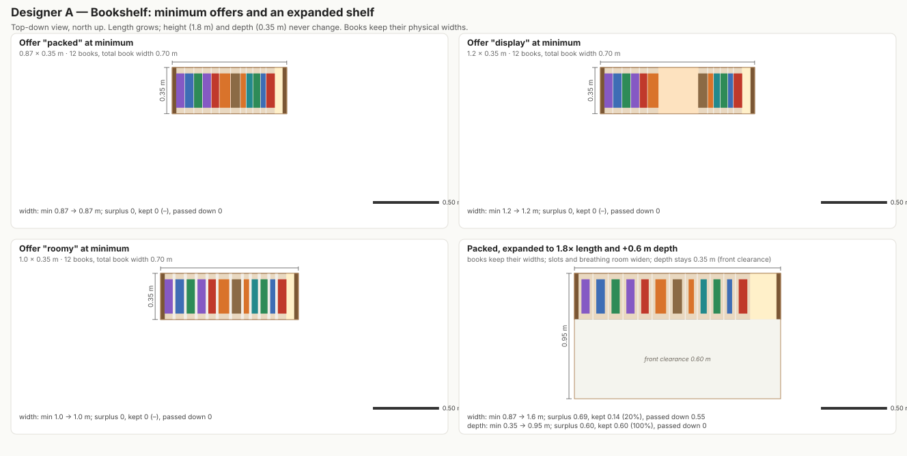
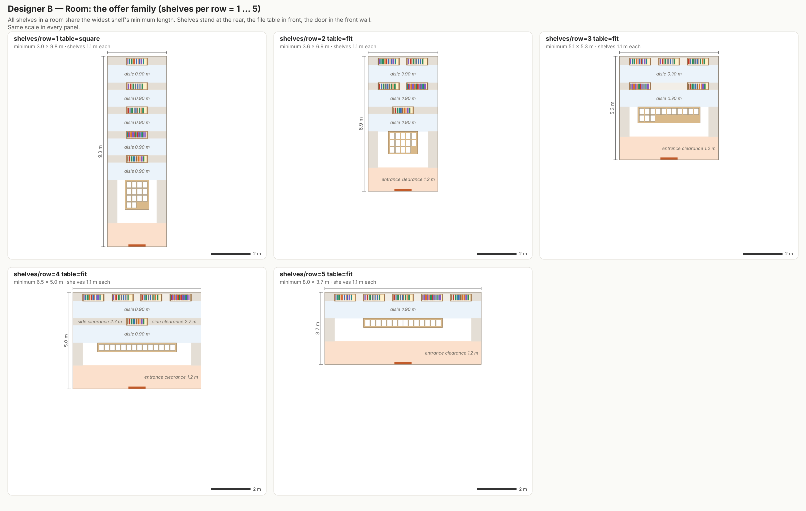
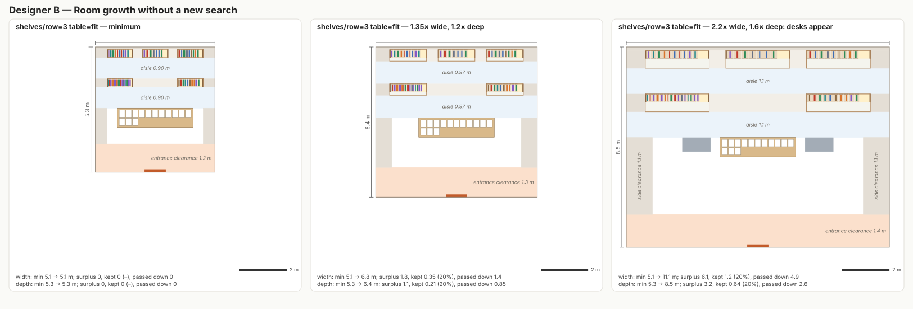
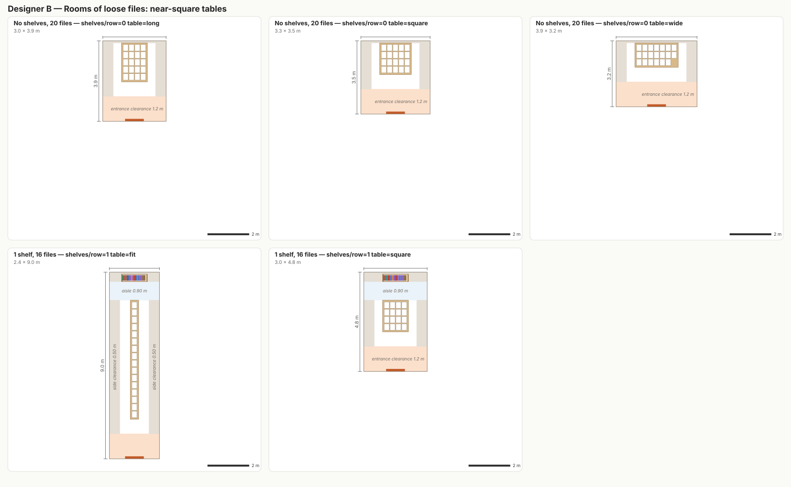
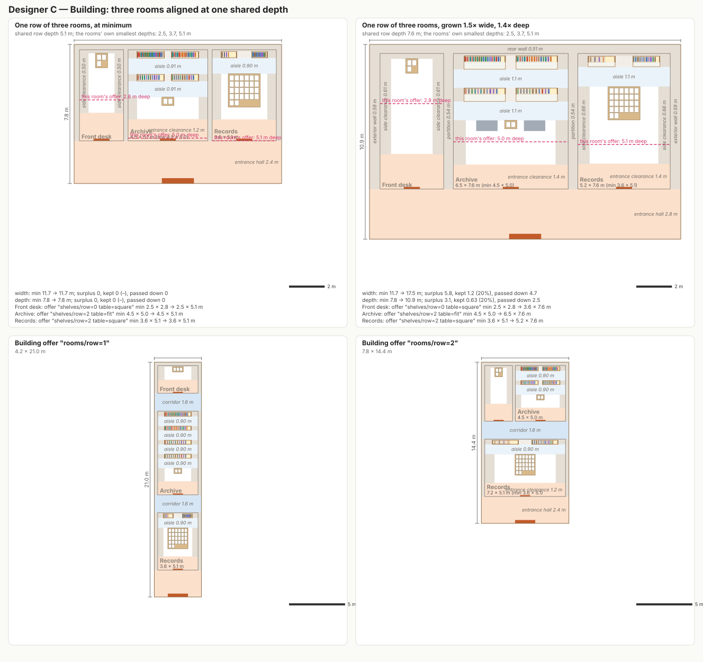
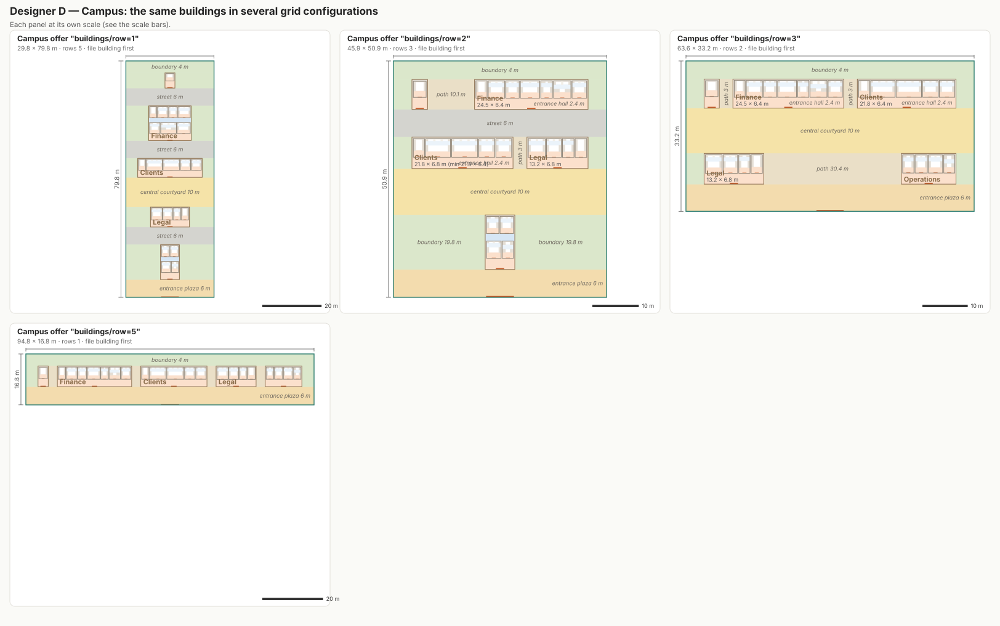
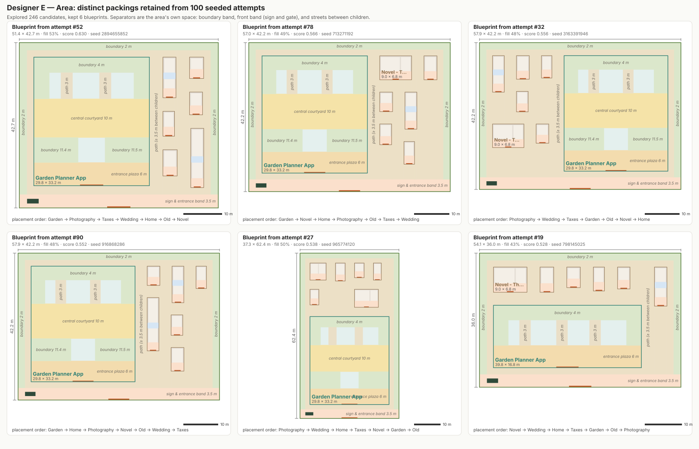
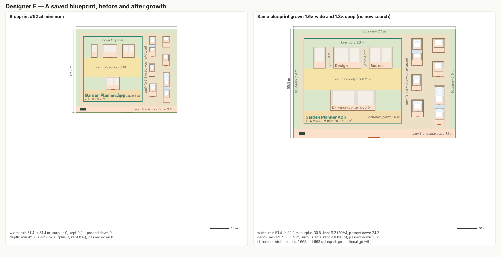
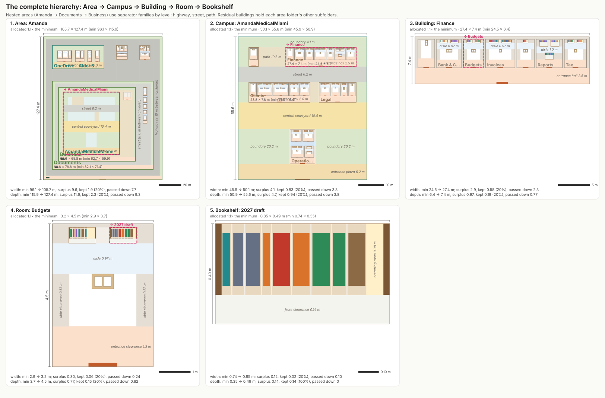
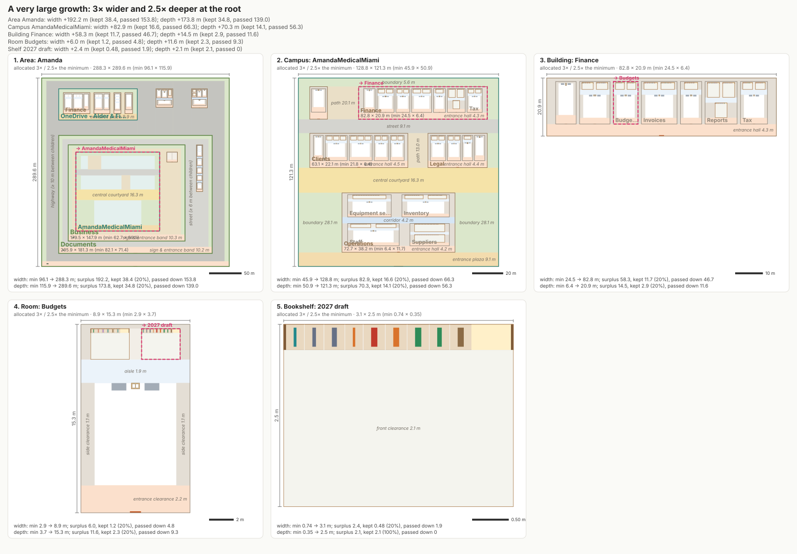

Spatial Layout Negotiator α.v2 — gallery
Five specialized designers, one measure/arrange protocol, 20% of every surplus kept at each level. All layouts below passed the validator (0 violations). Open any image for full size.
Sensitivity study: absorption 20% / 10% / 5% × uniform / balanced child-offer sampling, on identical datasets and seeds.










Benchmarks
# Benchmarks — Spatial Layout Negotiator α.v2 Measured 2026-10-25T00:05:02.145Z on Intel(R) Xeon(R) Processor @ 2.10GHz (4 cores, 15.7 GB), Linux 6.18.44-fc-v153 x64, Node v22.22.0 (V8 12.4.254.21-node.33). Timings are medians of 3–7 runs after a warm-up run. Heap figures are the retained heap of one measured tree (offers and saved plans) and of one placed tree, from keeping three of each alive after forced GC (gc exposed: true). Peak RSS of the whole benchmark process: 770.07 MB. SVG generation is not included. Synthetic hierarchies (seed 1): campuses of 1–4 buildings, buildings of 1–4 rooms, rooms of 0–4 shelves with 4–18 books and 0–9 loose files, grouped into nested areas of 2–5 children. "Containers" counts areas, campuses, buildings, rooms (including files rooms) and shelves; books and tables are not containers. ## Both passes, default Area budget (100 attempts) | target | containers | books | measure ms | arrange ms (1×) | arrange ms (2×) | total ms | measured heap MB | saved plans KB | placed heap MB | explored | retained | infeasible | violations | |---:|---:|---:|---:|---:|---:|---:|---:|---:|---:|---:|---:|---:|---:| | 10 | 10 | 45 | 1.34 | 0.29 | 0.23 | 1.63 | 0.01 | 6 | 0.1 | 124 | 22 | 2 | 0 | | 100 | 105 | 658 | 8.5 | 1.99 | 4.71 | 10.49 | 0.19 | 90 | 1.16 | 817 | 296 | 65 | 0 | | 1000 | 1055 | 5974 | 77.78 | 22.6 | 17.12 | 100.38 | 1.84 | 901 | 10.92 | 7413 | 2939 | 689 | 0 | | 5000 | 5223 | 30547 | 375.48 | 65.5 | 65.88 | 440.97 | 9.08 | 4447 | 55.03 | 35992 | 14635 | 3617 | 0 | ## Space utilization at minimum size (100 attempts) Share of each container's area occupied by its children, summed over all containers of that kind. The rest is the container's own space: boundaries, separators, streets, courtyards, corridors, aisles and entrance zones. "Room furniture" is the physical footprint of shelves, tables and desks. | target | area → children | campus → buildings | building → rooms | room → furniture envelopes | room → furniture | rooms % of root | |---:|---:|---:|---:|---:|---:|---:| | 10 | 30.93 | 17.96 | 56.11 | 29.16 | 9.23 | 3.12 | | 100 | 59.77 | 21.3 | 56.11 | 31.67 | 9.31 | 4.01 | | 1000 | 79.96 | 23.24 | 55.85 | 30.79 | 8.87 | 4.7 | | 5000 | 81.72 | 22.82 | 56.19 | 30.66 | 8.86 | 4.2 | ## Area search budget: 10 vs 100 vs 1,000 attempts | target | attempts | measure ms | of which Area designer ms | explored | retained | root min size m | root min area m² | rooms % of root | violations | |---:|---:|---:|---:|---:|---:|---|---:|---:|---:| | 10 | 10 | 0.42 | 0.21 | 34 | 22 | 31.36 × 35.12 | 1101 | 3.12 | 0 | | 10 | 100 | 1.34 | 1.17 | 124 | 22 | 31.36 × 35.12 | 1101 | 3.12 | 0 | | 10 | 1000 | 14.43 | 14.24 | 1024 | 22 | 31.36 × 35.12 | 1101 | 3.12 | 0 | | 100 | 10 | 3.28 | 1.32 | 547 | 296 | 87.01 × 131.33 | 11427 | 4.28 | 0 | | 100 | 100 | 8.5 | 6.88 | 817 | 296 | 115.57 × 96.98 | 11208 | 4.01 | 0 | | 100 | 1000 | 56.02 | 54.43 | 3517 | 296 | 116.9 × 91.95 | 10749 | 4.21 | 0 | | 1000 | 10 | 24.28 | 11.78 | 5433 | 2938 | 533.75 × 242.31 | 129333 | 3.75 | 0 | | 1000 | 100 | 77.78 | 69.3 | 7413 | 2939 | 231.83 × 427.39 | 99082 | 4.7 | 0 | | 1000 | 1000 | 454.95 | 446.87 | 27213 | 2939 | 232.18 × 442.73 | 102793 | 4.51 | 0 | | 5000 | 10 | 101.09 | 48.01 | 27982 | 14630 | 972.22 × 614.35 | 597283 | 3.99 | 0 | | 5000 | 100 | 375.48 | 311.78 | 35992 | 14635 | 679.93 × 813.18 | 552905 | 4.2 | 0 | | 5000 | 1000 | 2455.03 | 2406.51 | 116092 | 14635 | 868.97 × 575.04 | 499693 | 4.64 | 0 | ## Where the measuring time goes (1,000 containers, 100 attempts, last run) | designer | containers | own measure ms | candidates explored | offers retained | retained per container | |---|---:|---:|---:|---:|---:| | room | 319 | 3.76 | 750 | 740 | 2.3 | | building | 123 | 4.86 | 1962 | 316 | 2.6 | | shelf | 544 | 0.55 | 1632 | 1632 | 3.0 | | campus | 47 | 3.19 | 869 | 119 | 2.5 | | area | 22 | 83.94 | 2200 | 132 | 6.0 |